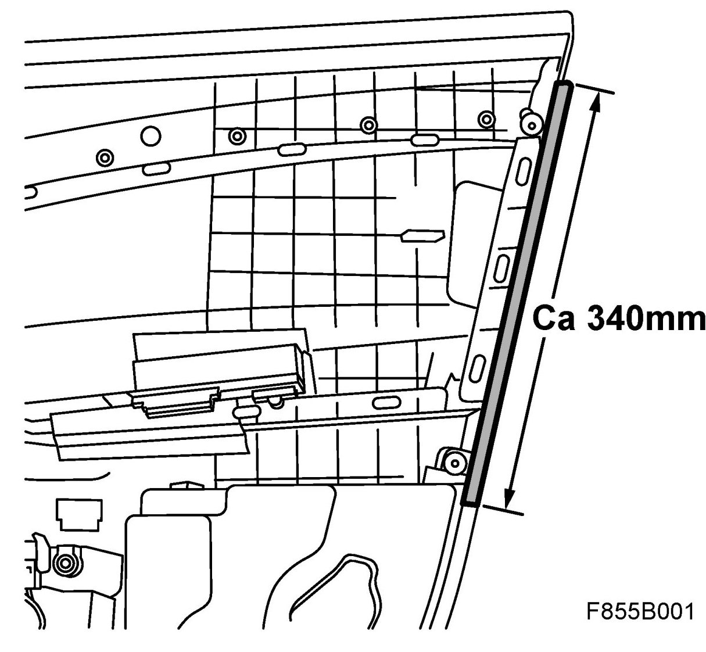
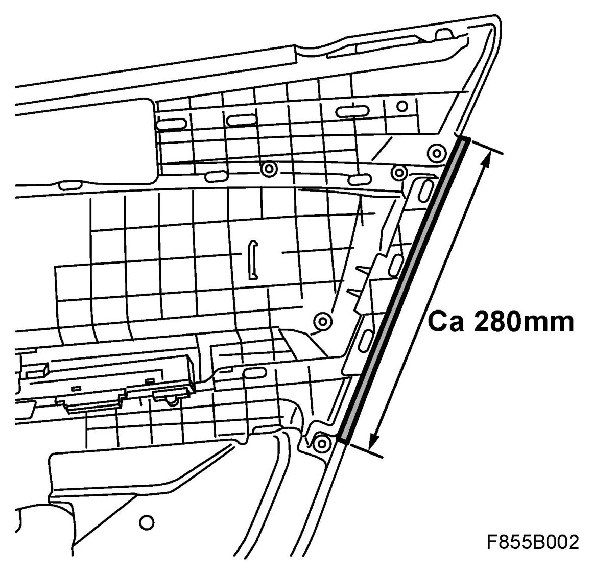

Symptom Related Diagnostic Procedures
Creaks And Rattles From The Door Trim
Fault symptoms
Creaks and rattles from the door trim.
Background: When driving in certain weather conditions, the door trim may squeak and rattle. This noise is caused by the edge of the door trim touching the door panel.
Cars affected:
Saab 9-3 (9440) within VIN range 31000001 - 41011709
Materials
32 000 492 Felt tape
Procedure
1. Remove Door trim, front, 4D and Door trim, rear.
2. Fit the felt tape on the front trim in accordance with the illustration.

3. Fit the felt tape on the rear trim in accordance with the illustration.

4. Fit Door trim, front, 4D and Door trim, rear.